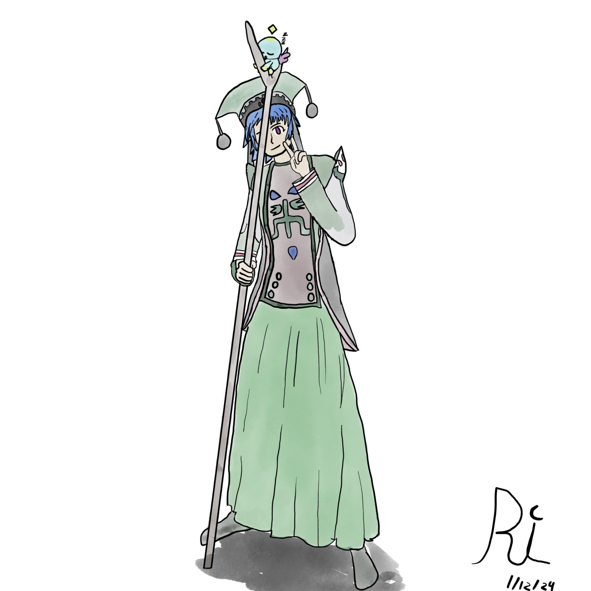
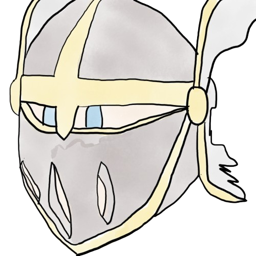

Back so soon?
Indeed, didn't have to keep you waiting for so long this time.
Progress on translation project?
Currently I'm waiting for my friend to proofread my work, the last translators stopped their work on chapter 5, with barely any work done on chapter 6. Once he finishes that, we'll make a proper xdelta patch. But for now it's mostly a waiting game.
New art?
Indeed, I've been cooking up some new art, and eventually will be my pfp until something else comes up that I like.
The thing I really wanted to focus on was proportions, though she's technically shorter than what's shown in this picture, tall girls can be cute too, lol.
One thing I really thought about was about what is good art vs bad art; and ultimately I came to the conclusion that it didn't matter in the end. What's good vs bad only really matters in the context of business, but what's really important is how much effort you put in, and the more you try at it, the more you end up liking it, regardless of its "quality".
Comparing how the art looks compared to other people's art is fruitless as you can try to copy someone's art style but you'll never be satisfied compared to making something on your own, and putting in your own effort.
Basically what I'm saying is that I'm happy with how it turned out, and that's more important than me trying to make "good" art compared to other people. I also tried to make a new pfp as my current one is still the Link one I made for Christmas, but I didn't like how it turned out, but here's how it looks.
It was just a bit too big for my liking, like too close to the camera, even though I think it turned out okay.
That's all from me today.